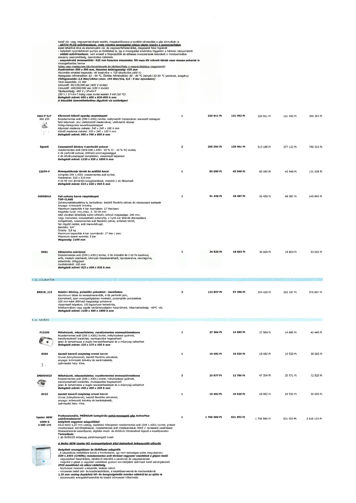

| Tétel | Menny. | Egys. | Anyag e.ár (net HUF) | Díj e.ár (net HUF) | Anyag összesen (net HUF) | Díj összesen (net HUF) | Anyag+Díj összesen (net HUF) |
|---|---|---|---|---|---|---|---|
| HAU-P 5x7 566 255 Kézmosó-kiöntő egység csapteleppel | 1 | NaN | 224 911 | 121 452 | 224 911 | 121 452 | 346 363 |
| Egyedi Csepegtető állvány 4 perforált polccal | 2 | NaN | 256 594 | 138 561 | 513 188 | 277 122 | 790 310 |
| 2207P-F Mosogatókosár tároló és szállító kocsi | 1 | NaN | 85 090 | 45 948 | 85 090 | 45 948 | 131 038 |
| 00958010 Fali zuhany karos csapteleppel | 1 | NaN | 91 458 | 49 387 | 91 458 | 49 387 | 140 845 |
| S401 Kétszintes zsúrkocsi | 1 | NaN | 34 820 | 18 803 | 34 820 | 18 803 | 53 623 |
| BRE18_115 Raktári állvány, polietilén polcokkal - kezdőelem | 3 | NaN | 124 807 | 67 396 | 374 420 | 202 187 | 576 607 |
| F13100 Mélyhúzott, négyszögletes, rozsdamentes mosogatómedence | 1 | NaN | 27 564 | 14 885 | 27 564 | 14 885 | 42 449 |
| S309 Asztali keverő csaptelep orvosi karral | 1 | NaN | 19 482 | 10 520 | 19 482 | 10 520 | 30 003 |
| IME404025 Mélyhúzott, négyszögletes, rozsdamentes mosogatómedence | 2 | NaN | 23 677 | 12 786 | 47 354 | 25 571 | 72 925 |
| S310 Asztali keverő csaptelep orvosi karral | 1 | NaN | 19 482 | 10 520 | 19 482 | 10 520 | 30 003 |
| Upster NEW U500 G 2 000 170 Professzionális, PRÉMIUM kategóriás pohármosogató gép ActivePlus szűrőrendszerrel | 1 | NaN | 1 706 580 | 921 553 | 1 706 580 | 921 553 | 2 628 133 |
